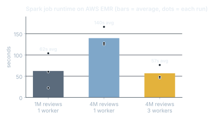

Big Data on AWS: Spark and SageMaker
Big Data Analytics coursework.
BI and data engineeringCompleted
01Problem
4 million reviews are too many for one laptop, and a model is only useful once something can call it.
02Approach
PySpark word-count pipeline on AWS EMR clusters reading from and writing to S3; XGBoost income classifier trained, tuned and deployed as a live endpoint on SageMaker.
03Impact
Moving from 1 to 3 worker nodes cut average runtime on 4,027,011 reviews by 59% (140s to 57s).
Results

What I did
- Removed an earnings column from the Census data that would have leaked the answer into the model.
- Ran hyperparameter tuning jobs and served predictions on 124,843 test records from the endpoint.
Code
from pyspark.sql.functions import col, explode, lower, regexp_replace, split, trim
reviews = spark.read.json("s3://<bucket>/BookReviews_4M.json") # 4,027,011 rows
words = (reviews
.select(trim(lower(regexp_replace("reviewText", "[^A-Za-z0-9 ]", ""))).alias("sentence"))
.select(explode(split("sentence", " ")).alias("word"))
.filter(col("word") != ""))
counts = words.groupBy("word").count().orderBy("count", ascending=False)
counts.coalesce(1).write.csv("s3://<bucket>/results", header=True, mode="overwrite")Tools
PySparkAWS EMRS3SageMakerXGBoost